Alpharetta High School
3595 Webb Bridge Rd, Alpharetta, GA 30005
As newer medical research leaps forward into headlines and grabs global attention, we often forget to look after those less fortunate than us. In particular, the elderly and especially those who suffer from dementia such as Alzheimer’s are often left to fend for themselves. There are an estimated 5.3 million citizens of the US who are 65 years or older and suffer from Alzheimer’s. Even in Georgia alone, there are around 140,000 elderly citizens who suffer from this dementia, and the numbers are expected to continue rising.
Our goal is to use musical performance to help those with dementia and other mental illnesses, raise awareness to combat mental illness with music, and encourage non-FBLA members to participate in the community project and become part of the FBLA community. There has been extensive research done that suggests that by listening to music, specifically famous classical pieces, dementia patients can slow down the progression of their diseases. Even if a patient does not suffer from dementia, the effect of music on patients inside places such as maternity wards is beneficial for the patients. Music is widely accepted to have a soothing effect on people and the atmosphere that a live musical performance can create is highly beneficial for places such as hospitals. The Alpharetta High School FBLA Chapter worked together to contact various organizations such as hospitals and retirement homes so that the chapter could organize events at these locations. The members of the AHS FBLA and the musicians of AHS FBLA worked together to create a calendar so that they could sign up for these events.

Featured Above: AHS FBLA Chapter Picture
|
|
|
|
|
|
|
|
|
|
|
|
|
|
|
|
Creating objectives based off the goals of FBLA-PBL allowed the team to more closely operate within the organization’s guidelines and more actively involve the Alpharetta High School FBLA community. It also successfully fulfilled the goal of reaching out to non-FBLA members to join FBLA by informing them of the FBLA goals that promote scholarship and unity in the student body.
According to American Law, there is no requirement for children to care for their aging elderly parents. Without anything compelling children to care for their parents, many of the elderly are left neglected without any proper treatment. This neglect leads to many elderly that suffer from dementia to not have any access to facilities that would make dealing with their disease easier.
The Healing Music Community was created to organize talented musicians who want to give back to the community. Even within the Georgia area alone, there are multiple places that give volunteers an opportunity to perform for the elderly and those in hospital wards.
The Healing Music Project created 3 separate positions as to make the procedures run as smoothly as possible: Communication, Public Outreach, and Research.
Derek Wang headed the Communication committee and helped to contact local organizations such as hospitals and retirement homes to schedule possible times for musical performances. These events helped to narrow down specific opportunities in which FBLA musicians could play for patients at local establishments.
Richard Cho headed the Public Outreach committee and helped to organize musicians into time slots that were organized by the Communication committee. By giving the FBLA musicians directions and instructions on which events they should take part in, the Public Outreach committee allows there to be higher participation and better quality of performances.
Jason Juang headed the Research committee and helped to do extensive research on the topic of how music affected patients in hospitals. This research helped to develop the back bone of the project and give validity in how musical performance has a positive effect on patients in retirement homes and hospitals.
Business Outreach (11/30/2017)
In order to reach out to the local community, the Public Outreach and Communications Committee contacted various business around the area. These included Addington Place Senior Home, Ashwood Meadows Gracious Retirement Living, Ivey Hall Assisted Living, Sunrise at Ivey Ridge, and William Pu Music Academy.
The contact with these retirement homes ensured set dates for the members of the project to act in advance by creating an online signup sheet with set, informed dates for any FBLA member to sign up and play for a senior home. Having set dates strengthen members’ connection to the community by having set plans for achieving the project goal of combatting mental illness with music performance. Through this set agenda, the businesses helped our team spread awareness of the easy opportunities accessible to Alpharetta High School students to give to the community, which helped more FBLA members get involved in Project Healing Music.
Awareness (12/9/2017)
In order to gauge the interest of Project Healing Music a meeting was held in the Alpharetta High School Orchestra room. Multiple FBLA members attended as the committee discussed the mission statement and implementation of the project. A calendar was shown in the dates that groups or soloists could perform in nursing homes or hospitals. In the meeting it discussed that people willing to perform at Northside hospital’s Healing Sounds program had to send an audition tape to verify the soloist’s or group’s skill.
Schoolwide Awareness Week (12/4/2017-12/8/2017)
During lunch and after school for a week, the Project Healing Music team actively spoke to the fine arts students of Alpharetta High School (non FBLA members included). These students were informed of the scheduled dates and opportunities available to them, and also encouraged to set their own dates to play for hospitals, retirement homes, and anywhere else that wasconvenient for them. In addition, the students were informed of the research done on the healing effect of music on mental illnesses (most applicable to dementia). This achieved the goal of spreading awareness on the effectiveness of combating mental illness with music. The students were encouraged to act on their own behalf of supporting the community, even if it was not through Project Healing Music.
Government Awareness (12/10/2017-12/11/2017)
Project Healing Music had yet to reach a broad audience, so our team wrote letters to government officials explaining project Healing Music’s purpose to raise awareness for the need for music in the lives of the elderly and the sick. We targeted the state and local government officials, specifically writing to Mayor David Belle Isle of Alpharetta, Mayor Kasim Reed of Atlanta, and Governor Nathan Deal of Georgia. We expressed our need to spread awareness, and wrote to encourage our state officials to persuade other teenage musicians in the area to play music whenever and wherever they can.
Performance at Northside Hospital (12/12/2017)
This was AHS FBLA’s first step in giving back to the community. Richard Cho, project manager, played violin for the Northside Hospital Women’s Center Atrium in Atlanta. Derek Wang and Jason Juang interviewed patients and staff that were part of the audience while Richard was playing. From this experience, our team was left with a better understanding of the impactfulness of music on the mind, and was motivated to keep pushing to spread more awareness and encourage other young musicians to do the same.
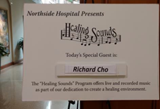
Featured: A title card made by Northside Hospital for performer Richard Cho
As a result of playing for the Northside Hospital Women’s Center community, the hospital management team sent an email for an interview for a promotional video they were creating from yesterday’s performance. In gratitude, our team gladly accepted and our team email was given to the Alpharetta local newspaper as well. Some of the questions that we were asked were (directed towards our performer Richard Cho): Why do you play for the community? What inspires you to play?
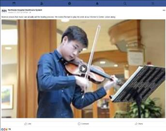
Promotional Video released by the Northside Hospital management team of our performer
What is it that you are thinking about when you play? This interview was later posted with the promotional video of our Public Outreach playing at Northside Hospital on the Northside Hospital Facebook page, garnering over 1000 views. Ultimately, we were grateful for this opportunity which raised awareness to encourage other young musicians to play at the hospital as well.
Antebellum James Burgess (12/21/2017) The Antebellum James Burgess establishment was the newest senior living home in the Suwanee area. The senior
living home was created for veterans after war. A quartet of AHS FBLA musicians went to the establishment and performed for 2 hours. They played soothing music for their audience of veterans to give a break on their minds, many of whom were diagnosed with unfortunate cases of TBI(Traumatic Brain Injury) and PTSD (Post Traumatic Stress Disorder).
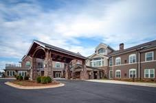
Featured: Picture of Antebellum James Burgess
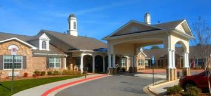
Ashwood Meadows Gracious Retirement Living
The Holiday Season Performance Event took place for four days immediately after the beginning of winter break. For these four days, musicians were organized to play at various senior homes: Ashwood Meadows Gracious Retirement Living in Johns Creek, Belmont Village in Atlanta, Ivy Hall Assisted Living in Alpharetta, Addington Place in Johns Creek, and Sunrise Senior Living in Atlanta.
Performing most often as quartets, but also as trios, duos, and solo, the musicians averaged two hours at each senior living home. Based off research that classical, gentle music is most calming to the mind, our groups performed calming familiar folk tunes and classical melodies for the senior citizens.
This event also inspired non-FBLA members to participate with their friends and family and as a way of just playing for the enjoyment of others. It inspired many of these non-FBLA members to become involved with FBLA hosted events and give an interest in joining the Future Business Leaders community in following years. It showed these non-members that FBLA is just a composed of competitive business events – it is a community that gives back to the community and its members.
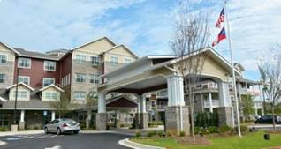
Addington Place
Family Service Day (1/20/2018)
In order to encourage not only the community to contribute the goals of Project Healing Music, but family members as well, the Project Healing Music team looked for opportunities to involve family members as well. The team organized an event at a retirement home Sunrise at Ivey Ridge and encouraged orchestra-FBLA members to get involved with their family. In particular, Outreach Committee Manager Richard Cho brought his entire family (his two sisters playing music as well) to play for the Ivey Ridge Residents, many of whom were victim to unfortunate diseases such as Alzheimer's and arthritis. Playing for these seniors right after lunch, they were given a special relaxing dessert and a moment away from the physical and mental pains that come with old age.
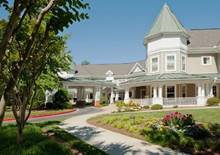
Sunrise at Ivey Ridge
Northside Hospital (2/1/2018)
The Project Healing Music Team once again went to Northside Hospital to play music and interview the patients and employees.
Various members of the Alpharetta High School Orchestra-FBLA organized individual events in support of Project Healing Music. The following dates are listed below:
Chinese Hope |
Pianoworks |
Brandywine |
Addington Place |
Belmont Village |
Addington Place |
Ashwood Meadows |
Morningside |
12/25 |
12/23 |
1/13 |
1/21 |
1/23 |
1/24 |
1/24 |
2/12 |
Through the usage of social media and other platforms, students were able to share, post, and like the publications and creations of the Healing Music Project. By the permissions granted by all those who were seen in the pictures an effective method of conveying information can be seen. Information on performances as well as statistics on the effects music therapy can also been on the various social media sites: Facebook, Instagram, and the Healing Music Website.
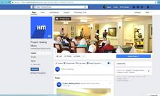 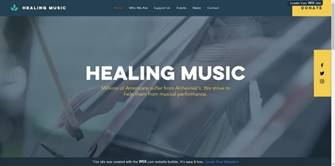
Healing Music Facebook Page and Healing Music Website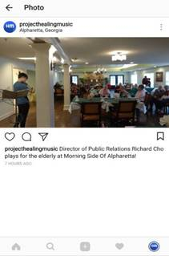
Healing Music Instagram
Healing Music Logo
*For some events at certain nursery homes, photographs were not permitted as to protect the privacy of the residents.
Of the multiple members participating during the program, the following select members earned a number of hours and deserve recognition for their dedication in serving their community with their musical talent.
The average time volunteered for each student involved in Project Healing Music was 10.2 hours. Some notable members of the program include:
Junior Rohit Das played piano at two locations: Piano Works and Brandywine elementary school. In total, Mr. Das played a total of 3 solo hours at these two locations and helped to foster a more positive environment. His performance at Brandywine elementary school in particular was described as being a wonderful performance that entertained the audience very much. A quartet consisting of students Adam Wang, Eileen Liu, Kaci Xie, and Serena Gao played a total of 26 hours. They played at multiple locations consisting of multiple retirement homes and schools. All of their performances have received positive feedback and their dedication to serving their community is obvious in the number of hours they committed to their performances.
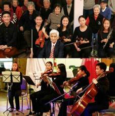
Members of a Quintet
Junior Richard Cho played violin at multiple locations which add up to a total of 10 hours of performances during the program. Mr. Cho played multiple times at Northside Hospital who enjoyed his performances so much that he was continually invited back to keep playing. Mr. Cho also played at retirement homes in the area and the employees of these locations all agreed, when interviewed, that Mr. Cho’s playing had a very positive effect on the residents.
Other than the talented musicians of FBLA, multiple other members of AHS FBLA committed time and effort in the coordination and creation of the project calendar where the events were held. The outreach to multiple organizations from the members allowed the promotion of awareness for music therapy and gave members an opportunity to service the community by practicing business communication.
In an interview with Carol Kratochvil from Northside Hospital, an anonymous visitor of Northside, and a volunteer musician, our team interviewed them in order to gain a better understanding of the impacts and benefits that music therapy had on the hospital and its patients.
Transcript:
Q: How do you think the music that is played impacts the patients?
Kratochvil: Unfortunately, not all patients are able to hear the music due to them being in closed rooms for privacy and peace of mind. However, sometimes you will see the moms wheel out to hear the music because up here is labor and delivery. It is relaxing, its entertaining… we have two big concerts a year with Beethoven Chamber Orchestra… and as people walk in, sometimes doctors, they’ll stop and listen and they are always complimentary.
Visitor: The atmosphere of the hospital is very stressful no matter where you are and the fact that music is played here or just in any work place makes it a more soothing environment.
Player (Volunteer): From my experience with playing in hospitals and senior homes, I believe that there is no substitute to the power of music on the human mind. Although I cannot say why, music has an effect on the mentally and physically ill that no physician can replicate with their tools. It is extraordinary that music has such an impact effect on people. I will continue to do this as long as I can and I am honored to do it through the FBLA community.
Q: What do you think the benefits music has on mental and physical health?
Kratochvil: There’s been lots of research. It lowers blood pressure …doctors encourage patients with high blood pressure to listen to classical music because it brings it down. We’ve got music on the bridge of the walkway, in the main lobby, and obviously, here.
Visitor: I know for me, because I listen to music when I work it creates a soothing environment that I can work efficiently in. After working, I am always stressed and I find that music above anything else is a big de-stressor for me.
Player (Volunteer): I have always heard that music has a calming and destressing nature on health, but to me personally, music makes me happy and I think it makes the people around me as well. Even playing sad music, it is not necessarily depressing or in pain, but lifts the mood and takes the mind off physical and mental health issues that one may have. It is almost like a painkiller for mental health; it is a moment of bliss in which one can be themselves without having to worry about the mental pains affecting them.
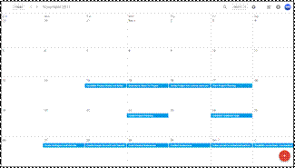
Nov. 14: Establish Project Chairs
Nov 15: Brainstorm Ideas for Project
Nov 16: Divide Project into various topics and strategies
Nov 17: Start Project Planning
Nov 22: Finish Project Planning
Nov 24: Establish Facebook Page
Nov 27: Create Instagram and Website
Nov 28: Create Google Account and Calendar
Nov 29: Find Potential Businesses
Nov 30: Contact Businesses
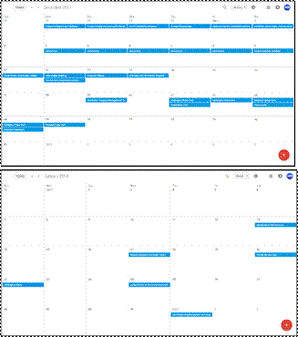
Dec 1: Set dates for scheduled performances
Dec 2: Establish committees: Communications, Public Outreach, Research, Management
Dec 4 – 8: Schoolwide Awareness Week
Dec 9: Implementation meeting
Dec 10-11: Government Awareness Letters and emails
Dec 11: Awareness Meeting
Dec 12: Northside Hospital Playing
Dec 13: Interview with Northside Hospital
Dec 19: Northside Hospital Management Team releases interview and video on Facebook Page
Dec 21-25: Holiday Season Performance Event
January 13: Brandywine Performance
Jan 17: Review Progress and begin report
Jan 20: Family Service Day
Jan 21: Addington Place performance
Jan 24: Gather hours of those involved with Project Healing Music
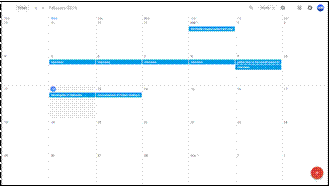
Feb 1: Northside Hospital patient and employee interviews and performance
Feb 5-9: Student interviews
Feb 9: Gather data on overall impact and effectiveness
Feb 12: Morningside of Alpharetta performance
Feb 13: Announcement of Project Healing Music progress
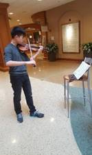
A volunteer performing at Northside Hospital
A member of the Alpharetta High School FBLA brought their sister to play for senior citizens on Family Service Day (1/20/2018)
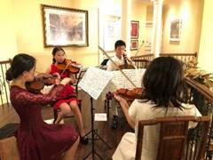A volunteer quartet playing for the community
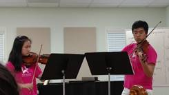
Volunteer performers from William Pu Music Academy
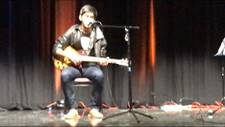
An AHSFBLA member performing at Brandywine School
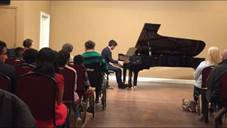
Volunteer Pianist from Alpharetta High School